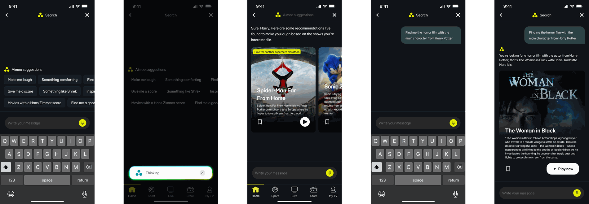
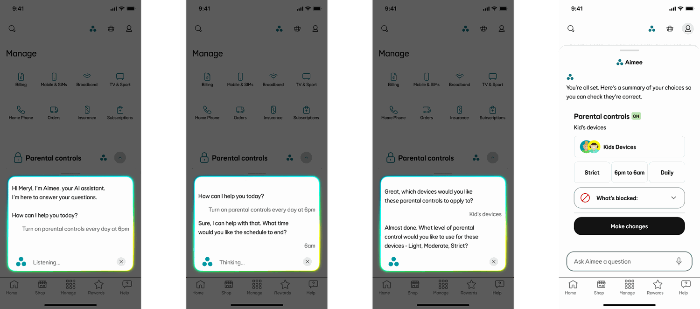
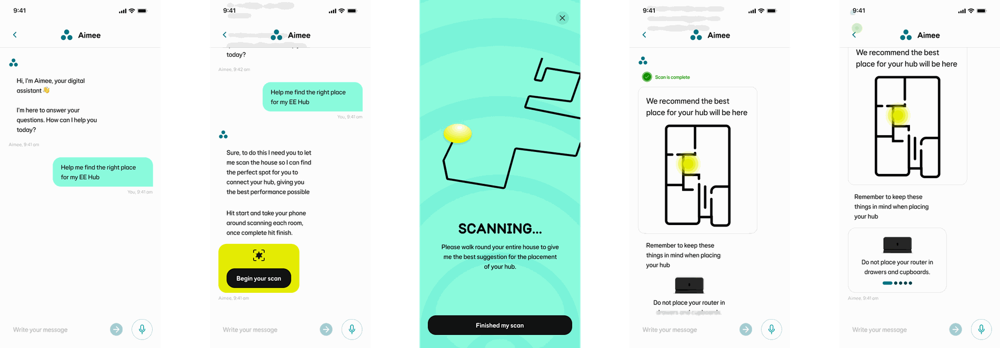

Aimee Vision
Exploratory work on where Aimee goes next: how an assistant stops being a chat window in the help section and becomes something woven through the EE app, turning up inside the journey you're already in.
Aimee lives in a chat window. What if it didn't?
Today, using Aimee is a decision you have to make. You open the app, find Help, find the chat, and describe your problem from scratch, even when you were already standing on the exact screen that problem belongs to.
This work asks the opposite question. Rather than making customers come to the assistant, what happens when the assistant turns up where they already are, inside the journey, aware of what's on screen, and able to do the thing rather than explain how to do it?
No metrics. That's rather the point.
None of this has shipped, so there's no containment figure at the end and nothing to claim. What vision work does instead is turn "we should do more with AI" (a sentence everyone nods along to and nobody can act on) into something specific enough to argue with.
Each exploration takes a real journey that exists in the EE app today and proposes a concrete alternative. Some of it will turn out to be wrong, or too expensive, or solving a problem customers don't have. That's a far more useful position to be wrong from than a slide that says "AI-first."
EE TV, search that thinks
Nobody knows what they want to watch. They know how they want to feel.
TV search is built around a fact that isn't true: that people arrive knowing the title. Everything follows from that assumption: a text field, an alphabetical keyboard, and a grid of genre rails for when the field fails. So the person who wants something funny, or something like the thing they watched last week, has to translate that into a guess at a name and hope.
Underneath, the problem is that conventional search matches tags. A film is labelled horror, or comedy, or 2012, and the query has to land on one of those labels to return anything. Ask for something a tag doesn't describe and you get nothing, not because the film isn't there, but because nobody thought to write that particular label on it.
The query a tag can't answer
The mobile screens make the argument more sharply, because they show a question the old model simply cannot process: "find me the horror film with the main character from Harry Potter."
There is no tag for that. Answering it means knowing who starred in Harry Potter, knowing which horror films that actor has since appeared in, and understanding that "main character" here means the performer rather than the role. Three separate pieces of reasoning, none of which live in a metadata field; and the result, The Woman in Black, is a film that was always in the catalogue and was simply unreachable by asking for it that way.

Suggest prompts, not categories
The chips aren't genres. Make me laugh. Give me a scare. Something like Shrek. Movies with a Hans Zimmer score. They're moods, comparisons and credits, the actual shapes people's preferences come in. They also do a quiet teaching job: they show the customer the kind of thing they're now allowed to ask for, which matters when you've spent a decade training people that search means typing a title.
Narrow by asking, not by filtering
On the TV, the journey doesn't dump results and offer filters. It asks a short run of questions and uses the answers to close in. That's the right trade for a screen you're operating from a sofa with a remote or your voice, filtering is a mouse interaction wearing a TV costume, whereas answering a question out loud is genuinely easy from ten feet away.
Three results, not three hundred
The TV journey ends on three films. Every instinct in a catalogue business says show more, but more is what causes the twenty minutes of scrolling that ends with nobody watching anything. Committing to a small, confident answer is a harder design position to hold and a much better experience, and on mobile the niche query narrows all the way to one, with Play now right there.
Show your working
"You're looking for a horror film with the actor from Harry Potter; that's The Woman in Black with Daniel Radcliffe." The answer restates the reasoning before delivering the result. When a system makes a leap this large, showing the chain is what separates a confident answer from a lucky guess, and it gives the customer somewhere to correct it if the leap was wrong.
Say when you're thinking
Reasoning takes longer than matching a tag, so the wait is real and needs naming rather than hiding. The Thinking… state (the same pattern used for voice in the parental controls work) makes the delay legible, and keeps a cancel within reach for anyone who's changed their mind.
Confident answers are only good while they're right, and the interesting failure here isn't returning nothing; it's returning one wrong thing with a fluent explanation attached. What the recovery looks like when the reasoning is plausible but mistaken is the question I'd want to design next. There's also a commercial tension worth being honest about: a system this good at finding the exact right film is a system that stops people browsing, and browsing is where catalogues surface everything nobody went looking for.
Parental controls, by voice
Four decisions, one sentence
Setting up parental controls is a form. Which devices, what schedule, which days, what level, what gets blocked, each one a screen, a decision, and a tap. It's not difficult, it's just long enough that people put it off, and putting it off is the failure state for a feature parents actually want.
Spoken aloud, most of it collapses into a single sentence: "turn on parental controls every day at 6pm." So the exploration was: tap the Aimee icon inside the parental controls component, say what you want, and let the assistant fill in the gaps by asking only for what's genuinely missing.

The entry point sits in the component, not the app
The Aimee icon lives inside the parental controls card itself rather than in a global toolbar. That's the whole difference between an assistant you have to brief and one that already knows what you're looking at, you never have to say the words "parental controls," because tapping it there has said them for you.
Voice you can see
Although the conversation is spoken, it renders as text in real time. Partly that's an error check (you can see it heard "6am" and not "6pm" before it acts on it), and partly it's the honest acknowledgement that plenty of people will use this somewhere they can't rely on audio, or would rather read than listen.
Always say what you're doing
Listening… then Thinking… The failure mode of voice interfaces is the silence where you can't tell whether it heard you, so you repeat yourself and talk over the response. Naming the state costs nothing and removes that pause entirely.
Land on something tappable
The conversation doesn't end in a spoken confirmation; it ends on a card. Voice is genuinely bad at review, because you can't scan it and you can't check one detail without replaying the lot. So the commit step goes visual: every choice laid out at a glance, with Make changes sitting right next to it.
Overlay, don't navigate
The panel sits over the Manage screen rather than taking the customer somewhere else. They arrived on that page for a reason, and when the conversation closes they're still on it, with the thing they came to do now done, rather than four screens deep in a settings tree working out how to get back.
Concepts are easy to make look tidy, so it's worth naming what this one hasn't solved yet. What the correction path looks like when it mishears something and you only notice after the summary card. Whether you can interrupt it mid-sentence, which people do constantly with voice and rarely forgive when it isn't supported. And whether anyone actually wants to say their children's device names out loud on a train, which may make the case that voice should be the shortcut, never the only route.
Where to put the hub
Some questions can't be answered in words
Where you put your hub is one of the most consequential decisions a broadband customer makes, and it's usually made in the first ten minutes of moving in, by whoever is holding the box, based on where the socket happens to be.
The honest answer has always been a set of rules of thumb: somewhere central, off the floor, out of a cupboard, away from the microwave. All true, none of it specific to the house the customer is actually standing in. But the phone in their hand can map that house. So this exploration asks what happens when the assistant stops offering advice and starts giving an answer: a spot, marked on your own floor plan, based on your own walls.

Answer a spatial question spatially
The output isn't a sentence describing where to put the hub, it's a glowing spot on a drawing of the customer's own home. Nobody has to translate "somewhere central, ideally elevated" into a decision about their actual hallway, which is the step where generic advice usually falls apart.
Make the assistant an instrument, not just an interface
This is the move that interests me most. Every other exploration here has the assistant working with information EE already holds. Here it goes and gathers something new, using the phone's sensors to collect evidence the customer couldn't have supplied themselves, because you can't see where your walls block a signal. The assistant stops being a way to ask questions and becomes a way to find things out.
Draw the map as they walk
The floor plan builds live during the scan rather than appearing at the end. It's doing three jobs at once: proving the thing is working, showing which rooms have been covered, and making a slightly odd request (walk around your house waving your phone) feel purposeful rather than embarrassing.
Let the customer say when it's done
Finished my scan is a button rather than something the system decides. Homes vary far too much to guess at completeness, and a scan that declares itself finished while the customer is still halfway up the stairs is worse than one that simply waits to be told.
Leave them with rules as well as an answer
The tips carousel afterwards (don't put it in a cupboard, and so on) covers what the recommendation can't. The marked spot solves today, in this house, with the furniture where it currently is. The rules travel: they still apply when someone rearranges the living room or moves out entirely.
The obvious one is what happens when the best spot and a power socket aren't in the same place, the recommendation is only useful if it accounts for where the hub can physically live, and right now it's answering a question about signal in isolation. Multiple floors need thinking through as well, since the scan reads as a single-storey plan and most houses aren't. And asking permission to build a map of someone's home interior is a genuinely bigger ask than it looks, which probably means being far more explicit about what's captured, where it goes, and how to delete it.